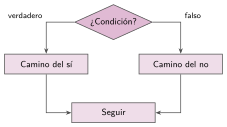

Dos caminos: si… si no
🤔 Pienso5 min
Qué hago aquí: Piensa un momento y contesta con lo que ya sabes. No pasa nada si no lo sabes: es para empezar.
Piensas un número del 1 al 10 y un amigo intenta adivinarlo. ¿Qué tres respuestas le puedes dar?
📖 Leo y aprendo10 min
Qué hago aquí: Lee despacio, mira los dibujos y los ejemplos, y quédate con la idea clave del final.
A veces hay que hacer una cosa si la condición se cumple y otra si no se cumple.

Para elegir entre más de dos caminos, se mete un si dentro de otro.
número secreto «es mayor» «es menor» «¡acertaste!»
✏️ Hago30 min
Qué hago aquí: Haz las actividades en orden. Empieza siempre por las básicas.
Monta el juego y juega tres partidas. ¿Cuántas veces aciertas a la primera?
Cambia el juego para que el número esté entre 1 y 20. ¿Qué bloque cambias?
Pide una nota. Si es mayor que 4, di «Aprobado»; si no, «Suspenso». Escribe los bloques.
✏️ Puedes responder escribiendo, con un dibujo o un esquema, o contándolo en voz alta.
Mejora el anterior: «Suspenso», «Aprobado» o «Sobresaliente» (9 o más). ¿Cuántos si necesitas?
🚀 Amplío (si quieres saber más)
Qué hago aquí: ¿Has terminado? Lee la curiosidad o elige el reto. Es voluntario.
Programa piedra, papel o tijera contra el ordenador. El ordenador elige un número del 1 al 3 y el programa dice quién gana.
✅ Compruebo5 min
Qué hago aquí: Contesta sin mirar la ficha y marca cómo lo llevas.